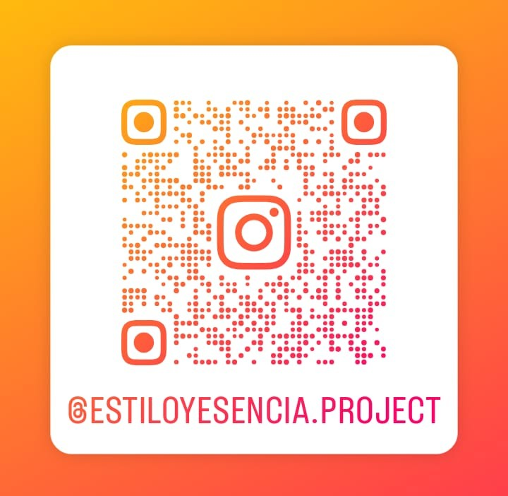

Stefany Martínez
@tefanyyy_
Todo lo que necesitas saber sobre el uso correcto del uniforme y la presentación personal en la Institución Educativa General Santander.
"Tu imagen habla por ti"
El uniforme en la Institución Educativa General Santander (Colgesan) no es una simple norma de vestir; es la primera carta de presentación de cada estudiante. Portar el uniforme adecuadamente refleja valores fundamentales como la disciplina, la responsabilidad, el orden, el autorrespeto y el orgullo de pertenecer a nuestro colegio. Además, promueve la equidad, mejora la convivencia escolar y fortalece la identidad institucional bajo nuestro lema principal: "Tu imagen habla por ti".
El uso correcto de cada uniforme (sea de diario, de gala o de educación física) está regulado oficialmente por el Artículo 81 del Manual de Convivencia Institucional. Todo estudiante de Colgesan debe conocer y aplicar estas pautas para vestir de forma adecuada según la ocasión correspondiente.
Existen dos tipos principales de uniformes que corresponden a distintas actividades:
De acuerdo con las pautas de presentación personal institucionales, estas son las diferencias clave que debes tener en cuenta en tu presentación cotidiana:
| Aspecto | ❌ Uso Incorrecto (Antes) | ✅ Uso Correcto (Después) |
|---|---|---|
| Estado de las prendas | Uniforme incompleto, arrugado o desordenado. | Uniforme limpio, planchado y completo. |
| Camisa | Camisa llevada por fuera del pantalón o la falda. | Camisa bien presentada y debidamente metida. |
| Calzado | Zapatos o tenis sucios o descuidados. | Zapatos o tenis completamente limpios. |
| Cabello | Cabello sin peinar o desorganizado. | Cabello ordenado siguiendo las normas del Manual de Convivencia. |
| Actitud | Mala actitud y poco compromiso con la imagen institucional. | Actitud respetuosa, responsable, positiva y comprometida. |
La imagen personal va más allá de la ropa; se construye día a día con nuestras acciones. Existen 5 cosas clave que dañan tu imagen y que debes evitar:
La pulcritud es una parte indivisible del uniforme. Para reflejar el compromiso institucional dentro y fuera del plantel, es indispensable cuidar:
No. Cuidar tu presentación personal no es buscar la perfección estética, sino una forma de demostrar respeto por ti mismo, por tus compañeros, por tus docentes y por toda la comunidad de la Institución Educativa General Santander. Recuerda siempre que: ¡Pequeños cambios hacen una gran diferencia!
Escríbenos y consulta con nuestro equipo de estudiantes de la técnica en sistemas teleinformáticos. Te asesoraremos paso a paso para que tu presentación personal siempre cumpla con las directrices del manual de convivencia institucional.
Tu opinión y tus ideas nos ayudan a crecer.
